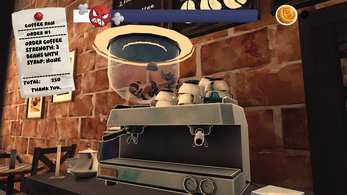
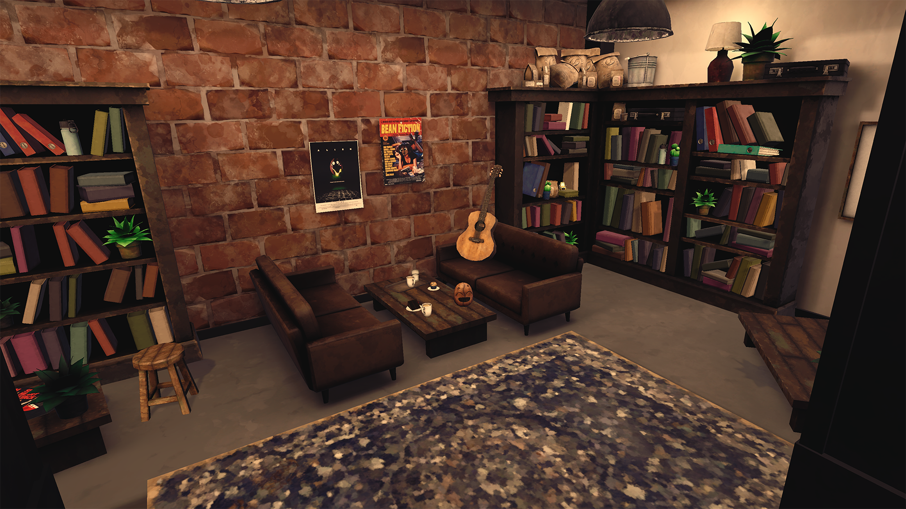
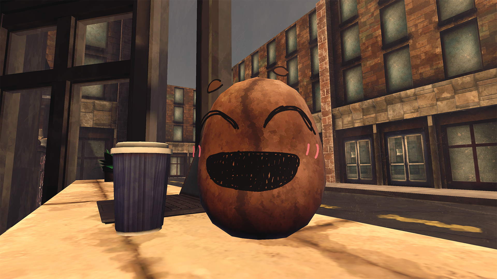
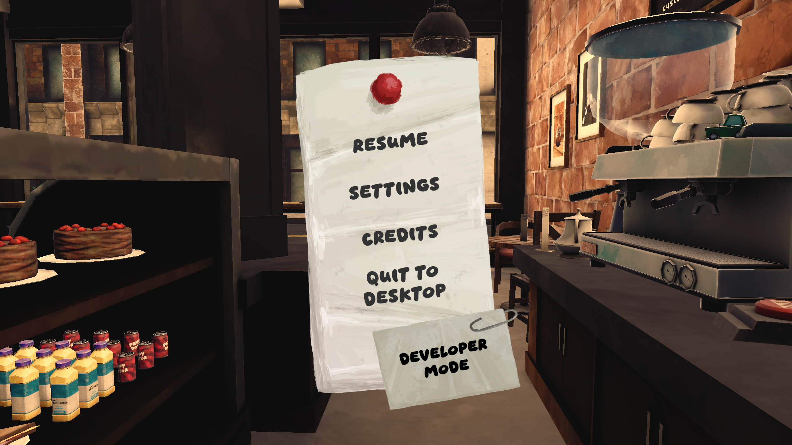
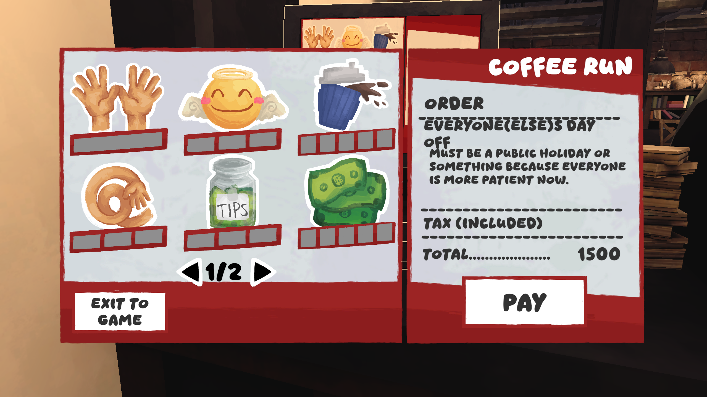
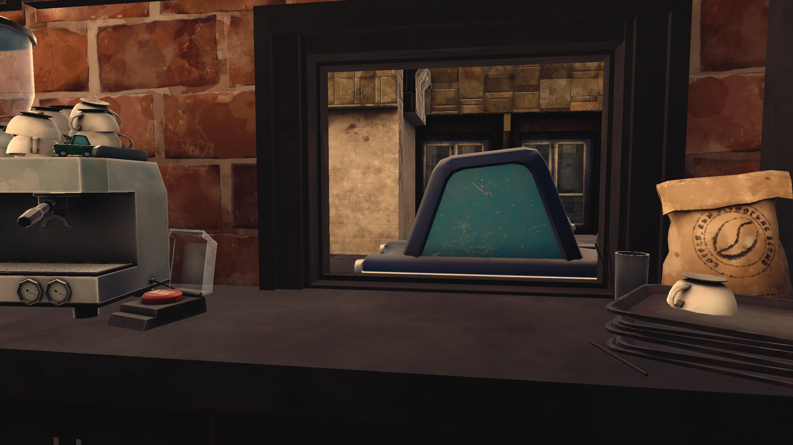

2025 Q2 · Gameplay / UI Programmer
Coffee, Run
A team Unity project about running a coffee shop under pressure, serving customers, handling upgrades, and progressing through increasingly difficult days.
Project overview
Coffee, Run was a group project developed in Unity by a small programming team. My work focused heavily on player-facing interaction, the core gameplay loop, menu flow, and progression systems.
My contribution
- Implemented the main interaction chain between the bean character, coffee machine, customer window, and order flow.
- Built menu UI functionality and connected it to the gameplay loop.
- Implemented the day / next-level progression system.
- Added most of the particle effects used for player feedback and polish.
- Expanded the core gameplay with functioning syrups and additional difficulty layers.
Gallery






